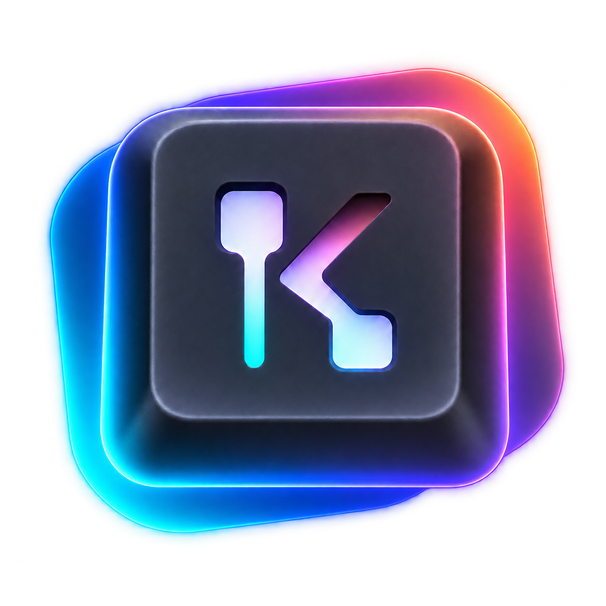

Loading version…
A flexible, unofficial Keymapp-style overlay for ZSA keyboards. KeyAura reads the keyboard directly and keeps the visual interface lightweight, configurable, and out of your way.
KeyAura listens to the keyboard’s QMK/Oryx Raw HID event stream: layer changes and physical key presses are read directly from the connected keyboard, rather than inferred from application text.
Created as a vibe-coded experiment with Claude and Codex.
Co-author / prompter: Jonathan Lafleur
me@jonathanlafleur.ca